These instructions will show you how to install, configure and run a Magic Mirror on a Raspberry Pi. This software provides an easy way to create an information kiosk on a Raspberry Pi. More information on Magic Mirror is available online.
After completing this assignment you will be able to:
You are expected to have a working knowledge of SBC hardware and software. If you do not understand how to use an item, perform a Google Search, refer to the WSU Technology Knowledge Base, ask a teaching assistant, or ask the instructor.
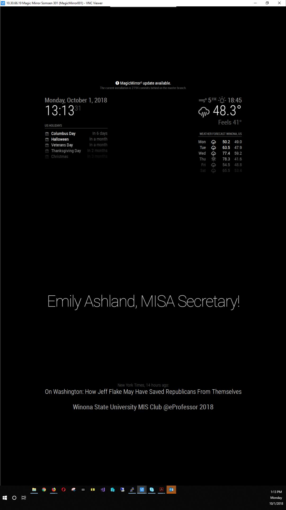 Magic Mirror
curl -sL https://deb.nodesource.com/setup_16.x | sudo -E bash -
sudo apt install -y nodejs
git clone https://github.com/MichMich/MagicMirror
cd MagicMirror/
npm install
npm audit fix
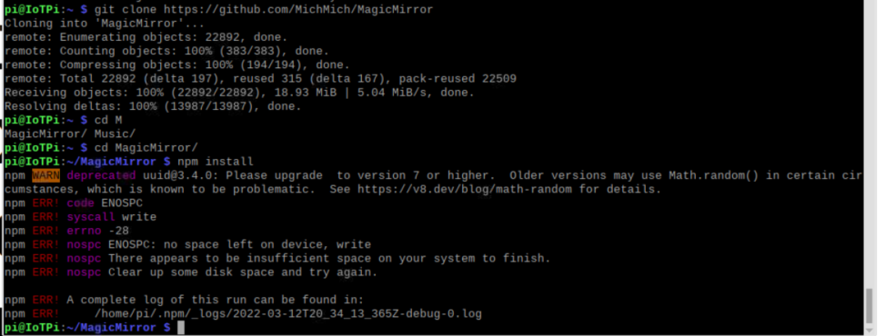 Magic Mirror
cp config/config.js.sample config/config.js
npm run start
Magic Mirror, default installation
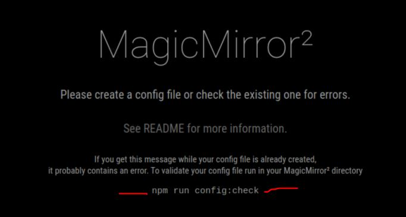 Magic Mirror, config file
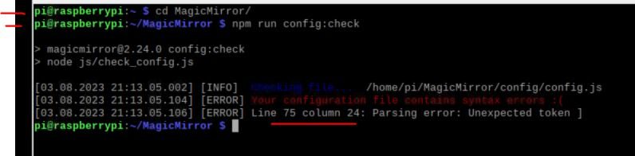 Magic Mirror, error details
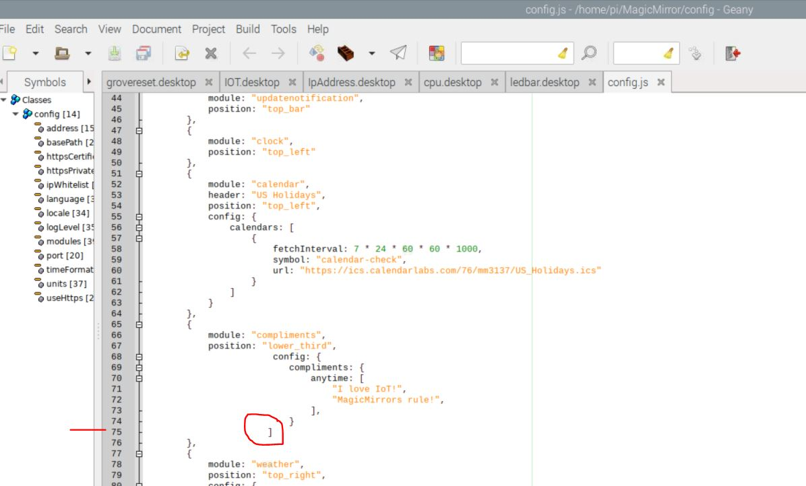 Magic Mirror, Geany editor
cd ~
cd MagicMirror/config
sudo nano config.js
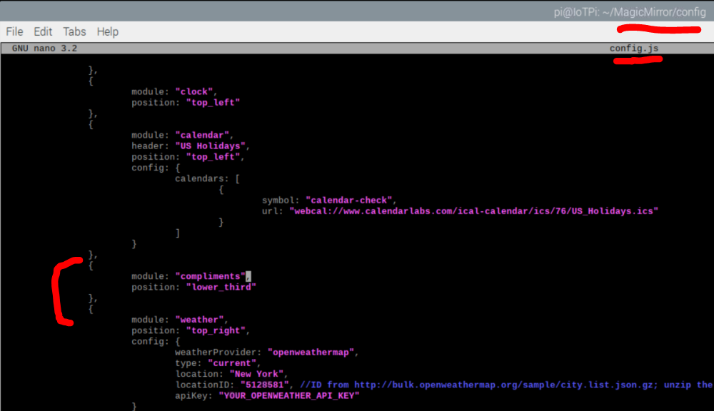config file, Compliments section
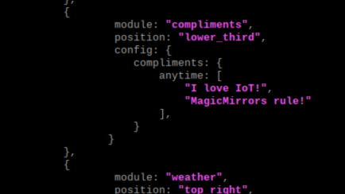config file, Compliments section
MagicMirror
Submit to the appropriate D2L Assignment folder a screenshot that documents your work.
(50) 1. Upload your screenshot to the 'IOT11' D2L Assignment Folder.
Based on your experience in this exercise, consider the value of the MagicMirrors for organizations, especially departments involved in prototyping IoT products and services such as information kiosks. Think about what type of problems a Raspberry Pi equipped with the MagicMirror, sensors and actuators could solve, and whether it could be cost-effective. References: MagicMirror: Website MagicMirror Modules: 3rd Party Modules MagicMirror Modules: IoT modules
When all tasks are completed press the Submit button.
Congratulations! You have used the RPi to learn to use Magic Mirror, an extensible information kiosk, on a Raspberry Pi single board computer.
https://calendar.google.com/calendar/ical/nytimes.com_89ai4ijpb733gt28rg21d2c2ek%40group.calendar.google.com/public/basic.ics
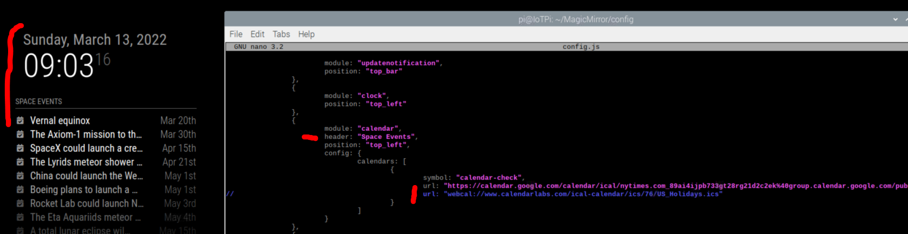config file, Calendar Feed
https://openweathermap.org/
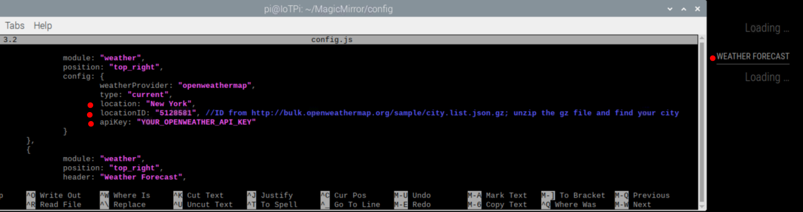config file, Weather Forecast
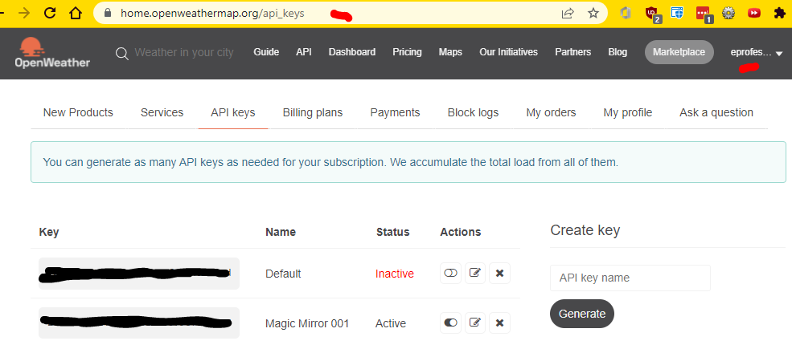config file, Open Weather Key
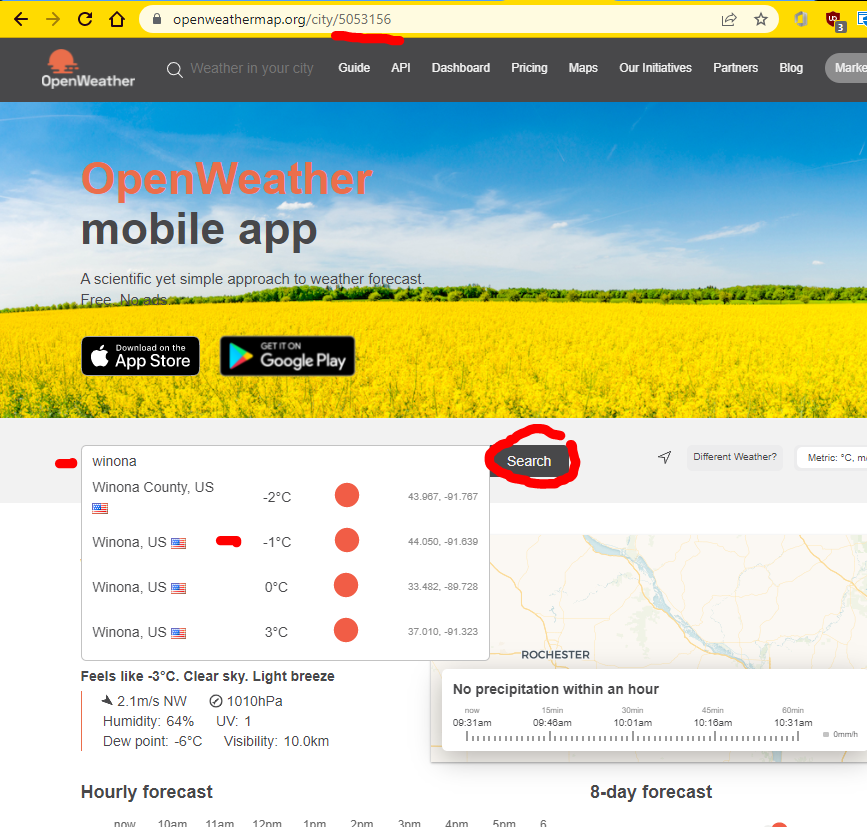config file, Open Weather Location ID lookup
update available message
Typically entering the command below into your /MagicMirror/ folder will install updates: git pull && npm install --only=prod --omit=dev
git pull && npm install --only=prod --omit=dev
If that does not work, study the information at this url: https://docs.magicmirror.builders/getting-started/upgrade-guide.html
https://docs.magicmirror.builders/getting-started/upgrade-guide.html